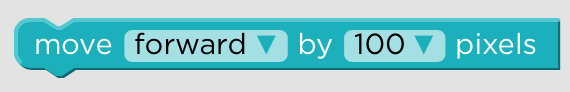

Erica Pantoja
Kennesaw State University
" Hopper's Fables "
CREU_Reseach_2016-2017

Good news from SIGCSE Conference
This week I met my groupmates and we are ready to move forward with the coding and graphics. My task for this week are so many; 1. Read the Common Core Standards for Mathematics article and look at Common core vocabulary. 2. Create a main point summary from the above article and regarding common core vocabulary documentation. 3. Come up with 4 math problems for each scene in our "First Day of School" 4. Design 5 to 10 blocks for each scene.
(March - March 17)
Ready to start coding :)
(March 4 - March 10)
Work accomplished: I feel more comfortable with JavaScript functions and understand better JavaScript code behind the blocks we create in Blockly. I also gained new JQuery skills, like how to design rows (next, previous) used in a gallery slider. I look forward to meet my groupmates after the conference so I can know what is the next step to move on and start working on it.
New skills
(Feb 25 - March 3)
Work accomplished: I gave up with canvas in JavaScript because it is so difficult to work with canvas when it comes to make the character move around the grid. I figured out that we do not really need to do this, we can have a very nice interaction with the student in the storylines without using canvas. As we are not working on the grocery storyline anymore for now,I have been working on my Illustrator skills during this week so I can have a good input in the graphics work for this new storyline "First Day of School " :) What I learned this week was new features in JavaScript, html, CSS and JQuery. JQuery is very new for me, and I am surprise how amaizing it in the desing of a web platform. As I mentioned in my previous post, I will not atteneded to the SIGCSE Conference, so I am going to use this comming week to improve my programming skills with JavaScript and JQuery so I have a good iput in the programming part of our stotylines.
Evaluation of Terminology Done
(Feb 19 - Feb 24)
Work Accomplished: As I mentioned in my past post, I have been working on the evaluation of the terminology used in Snap and Frozen against our rubric and I finally finished it. According my evaluation of Snap and Frozen, Frozen is a great language to follow as example for our language. It meets the requirements of our 3-point category in our rubric. For instance, in Frozen the purpose of the application is clear and it is easily to understand the assigned tasks, it gives detail and specific feedback, and the usage of visual representations is diverse and appropriate for the assigned tasks. On the other hand, Snap is not very clear with the purpose of the application; instructions are not clear and terminology correlates to programming terminology but is not applicable to the age group. So, in my opinion Snap is not a good block programming language to follow as example for our language. This week, I Also did some basic blocks with Blockly to start getting playing with them in the web interface and understand better the connection of the blocks with JavaScript. What I learned from this week was how to set the environment in my computer for Blokcly from the GitHub page. I also, create basic blocks and I kind of understand better now the JavaScript functions behind the blocks. Unfortunately, I will not attend to the SIGCSE Conference. I have so much work to accomplish for my classes during these two weeks and I decided not to go to the conference so I can focus on my assignments. Next week, I want to have a solid understanding on how to create our blocks in Blockly and functions in JavaScript.
JavaScript course !
(Feb 12 - Feb 18)
Work Accomplished: I am still working on my evaluation about Frozen and Snap terminology against our rubric. :( I like programming better than writing and this week is an example of this. I chose this week to learned more about JavaScript and other web development tools.
Lesson's Learned: Canvas in JavaScript
Goal: Finish my evaluation of the terminology, finish poster, and have and advance of our programming work.
Programming and evaluation of terminology!
(Feb 06 - Feb 11)
Work Accomplished: During the week I met with my groupmates to ensure we are fine with our graphics and move to the next step. I also did a small evaluation of Frozen terminology against our rubric. Moreover, I learned about javaScript and JQuery.
Lesson's Learned: This week, I learned the importance of terminology in our language. My groupmates came out with an excellent idea for student survey activity and I really like it.
Goal: Finish evaluation about Frozen and Snap against our rubric and the programming work before the conference
Graphics Done !
(Feb 01 - Feb 05)
Work Accomplished: This week I finished the ingredients graphics for our language, the consent form, and the CITI training. I used Illustrator for the graphics and I enjoyed it so much. This was my first time using Illustrator and I am surprise how incredible things I can do with this magic software.
Lesson's Learned: I learned how to use many of the tools in Illustrator, I learned the importance of the CITI training, and the rules for the consent and IRB forms. I really appreciated that parents are aware of their kids participation in research survey activities through school and that kids are not forced to participated if they do not feel comfortable participating.
Goal Next week: The goal for next week is do an evaluation of Frozen and Snap terminology against our rubric, and work on poster for conference.
Research paperwork, CITI Training !
(Jan 23 - Jan 31)
During this week I am doing 4 things:
- Signed Consent form
- Parental Consent form
- Assent form
- the CITI Program of minimum risk training
First two weeks of Spring Semester :)
(Jan 9 - Jan 20)
ADD/DROP classes, getting to know my professors and classmates, making group teams
Videos watched:
- Click here 2D maze game with device orientation.
- Click here Insertar una imagen en un Canvas HTML5.
- Click here Create an HTML5 (and JavaScript) Maze Game with a timer.
Graphics: Display items within the grid
(Dec 15 - Dec 31)
During this time, I was supposed to learn canvas in JavaScript and figure out how to display characters in the grid. I have been working on this but I cannot figure it out yet. In order to success in this task, I am using free tutorials online about graphics in JavaScript and Udemy academy courses on graphics with JavaScript. For instance, this one:https://www.udemy.com/how-to-program-games/ .

Terminology: Snap
(Dec 9 - Dec 15)
Snap terminology is huge. Snap shares many words with other programming languages like frozen and scratch. However, it has some uncommon words that in my opinion they are not clear for kids. Read More

Terminology: Frozen
(Dec 9 - Dec 15)
I found Frozen terminology very clear; short words, one-word instruction, and, common words. Read More
Terminology!
(Dec 3 - Dec 9)
During this week, I am documenting the words used in Snap and Frozen. Terminology is a very important factor in any programming language specially...
 Read More
Read More
Start coding on Blockly!
(Nov 25 - Dec 2)
We finally started coding. My task during this week was to code the blog "turn". Turn left and right.
 Read More
Read More
ACM Mid-Southeast Conference! Fall conference
Gatlinburg, Tennessee
(Nov7- Nov14)
My reseach mates and I got accepted to present our project at the ACM Mid-Southeast Fall 2016 Conference on Nov 11. So during this week we were getting ready for this big day
ACM Mid-Southeast Chapter Fall Conference
Read MoreBlockly, JavaSript, HTML ...
(Oct 18- Nov 6)
During this two weeks, I have been playing with Blockly, JavaSrcript and HTML. I hadn't used them before but now after messing around with these tools I feel more confident about our project. I am really enjoying to learn JavaScript, HTML, CSS, and Blockly, I spend hours playing with them and It is never enough. There is a lot we can do with these amazing tools.
During these two weeks we were also working on our abstract and submitting paperwork for conferences :)
No more to read :)
Hopper's Fables: Rubric (Final!!!!!!)
id = "date" (Oct 11- Oct 17)
This week we are working on finalizing our rubric according a 3 point rubric evaluation.
 Read More
Read More
Hopper's Fables: Rubric (close to the final product)
id = "date" (Oct 03- Oct 11)
This week we are working on finalizing our rubric and work on our proposal.
Read MoreHopper's Fables: Rubric
(Sep 26 - Oct 03)
This week we are going to focus in elaborate our rubric and the storylines of out language
 Read More
Read More
Keep doing reseach about existing block languages
(Sep 19 - Sept 26)
During this week we are continuing doing research about other block programming languages and their evaluation in education. I found out very interesting artilces that evaluate Scratch and App Inventor on programming skills, but have not found an exisiting block programming language that foucus on math and reading skills. This is why our language will be unique and most sucessful. Through out our storylines, kids will not only gain programming skills but also math and reading skills. Read More
Brainstorming- Characteristics of our language
(Sep 12 - Sept 19)
During this week I am doing more reseach about existing block programming languages, especially on those that according professionals are best block programming languages in education. Among those languages are Scracth, Scratch Jr. App Inventor, Lego, and Alice. Our task is do research about the evaluation of those top block programming languages so we can start elaborating the reubric of our block programming language. What wil make our language unique? What characteristics it must to have? What would be nice to have?
Reseach About Existing Block Programming Languages
(Sept 3 - Sept 12)
My task during this week is to do reseach about existing block programming languages, read the article Predicting Quality in Educational Software: Evaluating for Learning, Usability and the Synergy between them by David Squires and Jenny Preece, and get familiarized with Scratch and Blockly.
 Read More
Read More